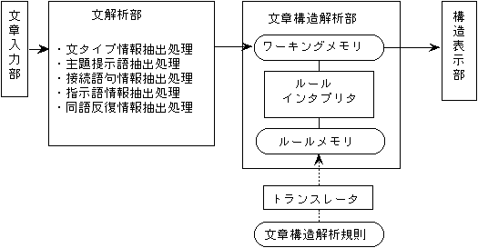

（４９）文章構造解析システム
マ シ ン：PSI
環 境：SIMPOS
言 語：ESP
ソース量：5.0 MB
文 書：マニュアル (日本語)
概要
書き手の主張の観点から日本語文章の構造解析を行うシステムである。
構成

機能
論説文は、ある事柄についての書き手の考えや意見など、書き手の主張を述べ
ることを目的とした文章であり、このような文章においては、書き手の主張を
読み手である読者に伝えるために論旨が展開されている。我々は、この論旨の
展開構造を文章の構造ととらえ、書き手の主張に基づく文章構造解析システム
を開発した。本システムは、文章の形態素解析結果から文章中の各文を書き手
の主張に基づいて分類された文タイプ情報、「は」「も」等による主題提示情
報、文章中の接続詞等の情報、「これ」「それ」等の指示語情報、同語反復情
報の各情報を用いて文章の構造解析を行う。文章の構造解析は、日本語文章の
文脈現象の解析に基づいて記述された約400の規則を用いて行う。これらの規
則は、以下の4つのルールグループから構成されている。
- 文章中の連接2文間の文間関係解析規則
- その関係に基づいた文のグループ化規則
- グループ間関係の解析規則
- 文章構造要素の認識による文章全体の構造解析規則
ＦＴＰ
- 文章構造解析システム [316K]

www-admin@icot.or.jp